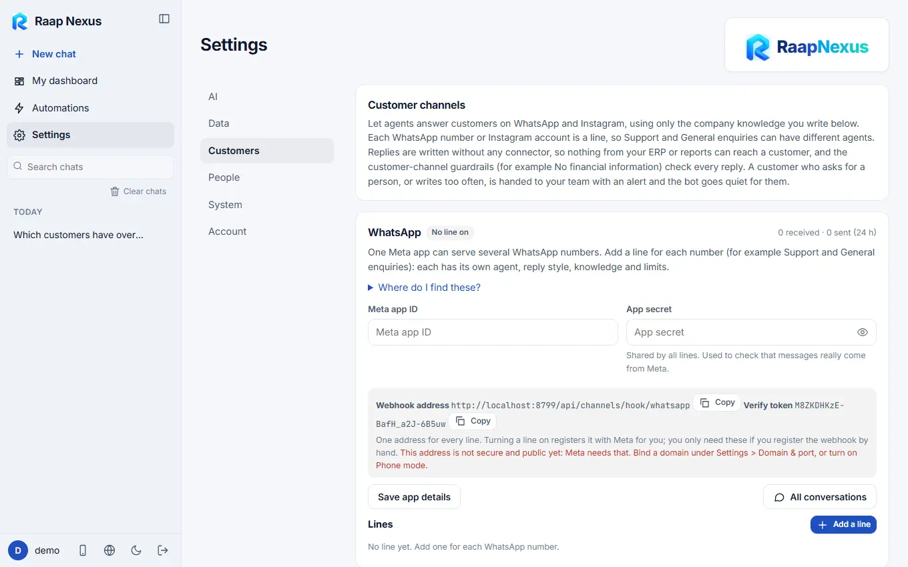

Raap Nexus
Raap NexusCustomer channels: WhatsApp and Instagram
Let agents answer customers using only the company knowledge you write. No ERP data ever reaches a customer reply.
What it does
Raap Nexus can answer customers on WhatsApp and Instagram itself, with no extra app. Each WhatsApp number or Instagram account is a line, so Support and General enquiries can have different agents, reply styles, knowledge and limits. A customer who asks for a person, or writes too often, is handed to your team with an alert and the bot goes quiet for them.

Replies are written without any connector and without tools. The agent only knows the company knowledge you write below, so nothing from your ERP or reports can reach a customer. Guardrails marked for customer channels are checked on every reply.
Connect WhatsApp
- Create a Meta app at developers.facebook.com (type Business) and add the WhatsApp product.
- In WhatsApp > API setup copy the Phone number ID and the WhatsApp Business Account ID.
- In Business settings > System users, create a user, give it your app and WhatsApp account, and generate a permanent token with
whatsapp_business_messagingandwhatsapp_business_management. - In Raap Nexus enter the Meta app ID and app secret, add a line with those details, and press Turn on. It checks the token, subscribes to messages and registers its address with Meta for you.
Connect Instagram
- Use an Instagram Business or Creator account. In your Meta app add the Instagram product (Instagram API with Instagram login).
- In Instagram > API setup add the account and generate an access token with the messaging permission.
- Copy the Instagram app ID and app secret.
- Add a line in Raap Nexus and press Turn on.
Until Meta approves your app for messaging (app review), only accounts that have a role on the app can message the bot.
Meta needs a secure public address to reach Raap Nexus. Bind a domain under Settings > Domain & port, or turn on phone mode (Domain, port and phone mode).
Company knowledge
The assistant answers customers only from the entries you write, and says a colleague will follow up when something is not there. Add entries as company profile, products and services (name, what it is, price if you want it quoted) and questions with answers. You can also read text from a PDF, or read products from one of your connectors (read-only): you choose what to keep, and only that text becomes knowledge.
Write only what you are happy for any customer to read: no financial figures, no personal data, nothing internal. Pieces with financial words are left out unless you tick them.
Line settings
- The agent that answers and an optional reply style (product information, about the company, sales assistant, support and FAQ).
- Reply automatically: turn it off to only collect messages and alert your team.
- Conversations: see every conversation, resolve it, send a message yourself, or hand a customer back to the bot.
- Turning a line off stops it answering; its past conversations stay for 90 days.
WhatsApp and Instagram are products of Meta Platforms. Raap Nexus is not affiliated with or endorsed by Meta.